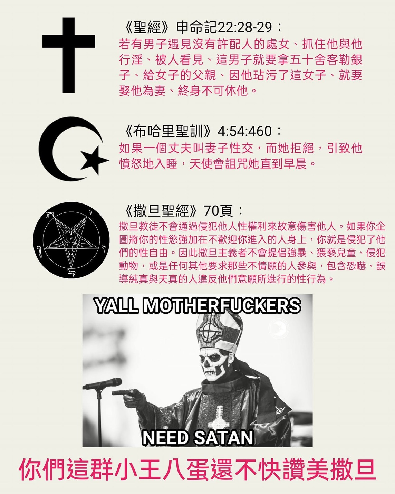
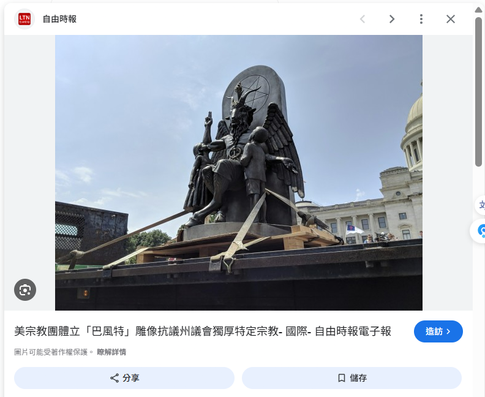
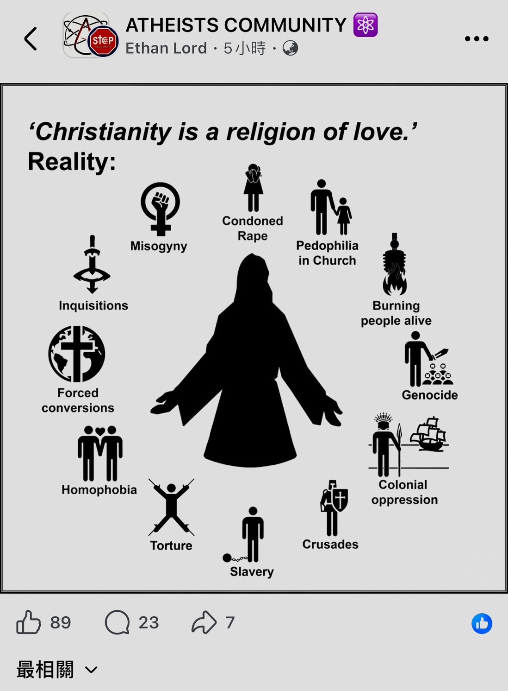

⚖️ 專案開發者聲明：邏輯一致性審核
本專案並非針對任何特定的宗教或群體，而是針對所有「缺乏物理實相支撐」與「邏輯不通」的信仰系統進行解構。
身為開發者，我們深知一套系統若底層邏輯混亂，無論介面（儀式）多麼華麗，最終都將導致運行錯誤。本專案的宗旨如下：
- 無差別審計： 無論是西方的亞伯拉罕諸教、印度的因果業力、歐洲的原始德魯伊，或是東方的神祕主義，皆平等接受科學與邏輯的 Debug。
- 拒絕迷信誤導： 迷信本質上是古代樣本在資訊貧乏下所編寫的「邏輯補丁」。在現代科學與腦神經科學已高度發展的今天，繼續沿用這些過時、甚至有害的「舊版代碼」，只會阻礙人類對真實世界的認知。
- 回歸物理實相： 我們尊重文學美感與心理撫慰價值，但堅決捍衛「事實歸事實，信仰歸信仰」的界線。不要讓數千年前的資訊謬誤，鎖死了你大腦的運算資源。
「本專案不提供心靈寄託，只提供實相數據。請保持理性，拒絕被任何未經校驗的迷信系統所誤導。」
目錄
隨便點選下方其中一個主題便能直接跳到該主題的說明區前言
本頁面旨在對全球流傳最廣、誤解最深的「撒旦教」實施邏輯反編譯（Reverse Engineering）。
當我們用系統分析的眼光拆解現代社會，會發現 99% 的現代人本質上都在運行撒旦教的處世哲學，只是他們的大腦運算資源長期被舊神權的話術軟體所綁架。本章將徹底釐清事實：
- 形式不等於本質： 撒旦教不是一個崇拜超自然惡魔的盲信組織，而是一場披著宗教外衣、旨在 Debug 體制雙標的極致諷刺哲學。
- 符合生物學人性： 拒絕違反腦神經科學的「禁慾」與「自我欺騙」，全面回歸健康的物理多巴胺流轉與個人主權。
- 理性防禦防線： 運用「以牙還牙」的對等防禦機制，抽乾虛擬罪惡感對凡人實施的精神勒索。
「世人皆以為它是邪教，卻不知它是一面最鋒利的照妖鏡，專門超渡世間一切神權系統的偽善與失能。」
1. 世俗劇本強加的 99% 降智誤會
在大眾文化、好萊塢影視劇與傳統宗教宣傳中，
撒旦教經常被 Hardcode（硬編碼）成邪惡、恐怖的符號。
例如：
- 黑魔法與活人獻祭
- 喝動物血與反社會破壞
- 崇拜長著羊角、肉體真實存在的地獄惡魔
- 教唆信徒犯罪以換取超自然黑暗力量
這些恐怖情節 100% 來自中世紀天主教會為了實施社會維穩、
恐嚇群眾、剷除異己（如獵巫運動）所隨意編造的虛擬軟體代碼。
現代主流撒旦教與這些中二設定毫無因果關係。
2. 拉維撒旦教的底層無神論代碼
現代撒旦教奠基於 1966 年由安東·拉維（Anton LaVey）建立的撒旦教會（The Church of Satan）。
其官方教義開宗明義指出以下物理事實：
- 我們不相信任何超自然的造物主，也不相信有「撒旦」這個實體惡魔。
- 我們是堅定不移的無神論者（Atheists）與唯物主義者。
- "Satan"（反抗者、對手）在我們的系統裡只是一個代碼指針（Pointer）。
- 這個指針代表：理性、科學、懷疑精神，以及對集體降智謊言的終極反叛。
而是人類個體自己。
每個人都是自己生命系統的唯一根目錄管理員（Root Administrator）。
3. 教義的科學性、心理學與生理實相
拉維在《撒旦聖經》中提出的核心教條，
經現代心理學與腦神經科學對審，展現出極強的科學自洽性：
● 擁抱生理享樂，拒絕虛無禁慾（符合生物多巴胺規律）
傳統神權試圖將人類正常的性慾、物慾與享樂本能標記為「罪惡」，藉此製造精神焦慮。撒旦教主張「理性放縱（Indulgence）」：在不傷害他人、不違反法律的前提下，坦然享受物質與生理快樂。這完全符合現代醫學將性與生育解耦、釋放壓力的科學健康實相。
● 對等抵禦機制，拒絕雙標寬容（符合心理防禦與正義邏輯）
傳統宗教鼓吹「別人打你的左臉，你要把右臉也湊過去」的降智偽善。撒旦教提出「誰對我好，我就加倍回報；誰侵犯我，我就以牙還牙、物理 Debug」。這在社會心理學與博弈論中，是最能維持系統動態平衡、保護個體心理健康的「對等防禦策略（Tit-for-Tat）」。
撒旦教甚至制定了極具現代人道精神的「十一條大地法則」，例如：
1. 除非受到邀請，否則不要發表意見（尊重邊界，拒絕強行傳教綁架）。
2. 不要向違背你意願的人實施性接觸（嚴格的性自主權，高於任何宗教律法）。
3. 絕對不要傷害小動物，除非受到威脅或為了充飢（保護自然生態與同理心）。

🎬 4. 現代流行文化審計：美劇《魔鬼神探》（Lucifer）的人性化反轉
在當代影視與大眾流行文化的文本中，
2016 至 2021 年熱門美劇《魔鬼神探》（Lucifer）中由湯姆·艾利斯（Tom Ellis）飾演的路西法·晨星（Lucifer Morningstar），
堪稱現代撒旦教處世哲學最完美的具象化演繹。
這部劇用最直觀、充滿幽默感的影視語言，
徹底格式化了中世紀神權系統強加在魔鬼身上的所有恐嚇標籤：
劇中的路西法最痛恨被人栽贓與迷信化。祂在劇中總是無數次憤怒地向凡人澄清：『人類自己犯下罪行，卻總喜歡懦弱地把 Bug 推給魔鬼！我從來沒有強迫任何人做任何事！』這精準映射了現代撒旦教的核心心理學實相——人類必須為自己的物理選擇負起 100% 的系統責任，拒絕用虛擬的惡魔恐嚇話術，來為自身的愚蠢、自私與惡意進行開脫。
祂因為厭惡體制的僵化而主動離開冰冷、司法失能的地獄系統，來到人間洛杉磯經營夜店、坦然擁抱美食、音樂與肉體等健康的物理多巴胺。然而當凡間發生命案時，祂卻因為內建的強烈正義感，自願擔任警局顧問，運用「誘發罪犯說出內心真實渴望」的心理學機制，聯手警方 Debug 凡間的罪惡。祂懲罰的從來不是好人，而是那些滿口道德仁義、實則傷害無辜的偽善節點。
劇中無論是滿腦子只有僵化教條、強行要將路西法抓回地獄實施格式化的天使長阿曼納迪爾（Amenadiel），還是躲在幕後擺爛、拒絕直接現身修復家庭 Bug 的至高上帝，都再度實證了那些高高在上的「上層力量」是多麼雙標、冷酷與失能。
反倒是那個天天被世俗偏見污名化的地獄之王，活得比任何神聖使者都更誠實、更富同理心、也更具備溫實的人道善意。
從社會工程學視角來看，這個角色的成功反轉，
再次鐵證了撒旦教的核心處世哲學：
- 真正的善良不需要依附在虛無的神聖教條下。
- 誠實面對人性的生物本能，往往比滿口神蹟的偽善者更具備人道精神。
- 打破第四面牆的反諷，是超渡世俗謊言最強大的邏輯武器。
5. 撒旦聖殿：披著宗教皮囊的社會工程學反制
現代更具戰力的流派——「撒旦聖殿（The Satanic Temple）」，
更是把撒旦符號發展成了一套頂級的政治反諷與司法反制藝術。
當保守派宗教團體試圖利用法律漏洞，在公立學校設立宗教石碑或推動侵犯個人生育自主權的法案時，撒旦聖殿會採取以下「用 Bug 打敗 Bug」的降維打擊：
- 合法向政府申請：既然你們允許宗教自由，那我們也要在校園豎立巨大的「巴風特羊角惡魔」雕像！
- 政府為了不讓惡魔雕像進入公域，通常只能被迫一併撤除原本基督教的石碑。
- 將「撒旦教墮胎儀式」註冊為受宗教自由保護的法定權利，以此對抗反墮胎法案，強力捍衛女性的身體自主權。

他們根本不搞超自然迷信，
他們是拿「惡魔的皮囊」當作最鋒利的除錯工具，去扒光神權體制的政治偽善。
⚖️ 6. 數據矩陣大對審：神聖名義下的歷史 Bug vs 被污名的至善代碼
在世俗的宣傳系統中，傳統宗教總是將自己包裝成「愛與光明」的化身，
並將追求理性、擁抱生物本能的撒旦教抹黑為邪惡。
然而，依據歷史唯物主義與客觀物理數據對審，
真實世界的因果律往往呈現出完全相反的諷刺實相：
❌ 宣稱「愛之宗教」的底層執行實相 (Reality Matrix)
正如無神論社群文獻（what_christianity_has_done.jpg）所精準彙整的歷史實證，天界系統在現實物理世界中，其代理人（教會）在幾千年間不斷在地球上運行著最具毀滅性的惡意代碼：
- 系統性暴力：宗教裁判所（Inquisitions）、殘酷的折磨拷問（Torture）、將異端活活燒死的獵巫火刑（Burning people alive）。
- 地緣政治侵略：名為神聖實為利益分贓的十字軍東征（Crusades）、殘酷的全球殖民壓迫（Colonial oppression）與文化滅絕（Genocide）。
- 威權思想強植：抹殺自由意志的強迫改宗（Forced conversions）、剝奪人類基本尊嚴的奴隸制（Slavery）。
- 反生物學的階級壓迫：長達數世紀的厭女與貶低女性（Misogyny）、縱容侵犯（Condoned Rape）、乃至現世中不斷被踢爆的教會內部戀童癖系統性醜聞（Pedophilia in Church）。
- 散播制度化仇恨：對性少數族群實施精神與肉體勒索的恐同症（Homophobia）。
🛡️ 被污名為「魔鬼」的真實人道規律 (Satanic Core)
反觀被神權系統恐嚇話術污名化、被指控為邪惡的現代撒旦教，其核心運行的軟體哲學與行為法則，卻遠比任何宗教都更清醒、更具人道大愛與至善特質：
- 絕對尊重個體主權：『除非受到邀請，否則不要發表意見』。從源頭掐斷強行傳教、用恐懼勒索他人的流氓邏輯。
- 強烈捍衛兒童安全（Bug 免疫）：拉維教義嚴格硬編碼——『絕對不允許傷害兒童』，將兒童視為最高主權，這與教會內部層出不窮、包庇戀童癖的「司法死聯」形成天堂與地獄的對照。
- 嚴格的身體與性自主權：『不要向違背你意願的人實施性接觸』。高於世俗與神權教條，在肉體與精神層面實施最乾淨的邊界保護（Zero Trust）。
- 社會工程學的反制善意：撒旦聖殿運用「巴風特雕像」在美國司法界無差別 Debug，逼迫保守派宗教撤回侵犯女性生育自主權與世俗教育系統的雙標法案，用惡魔的皮囊守護現代民主與人權。
- 科學唯物主義回歸：不搞神蹟神棍、不搞巫術迷信。生病看醫生，事實看數據。釋放被虛擬罪惡感鎖死的大腦運算資源，讓凡人坦然擁抱當下的物理多巴胺。

這行冷酷的歷史與現世數據戳破了世間最大的話術黑箱——那些滿口神愛世人、滿口神聖教條的組織，在物理實相中幹盡了地表上最殘酷、最降智的惡行；而那個披著惡魔皮囊、自稱撒旦信徒的哲學，卻在用最科學、最清醒、最尊重基本人權的代碼，默默守護著人類的自由意志與理性防線。
事實大於形式，數據重於包裝。誰才是真正對人類有害的「邪惡Bug」，在歷史唯物主義的編譯器面前，答案早就一目了然。
7. 為什麼現代人本質上都是撒旦教隱形信徒？
摘除虛擬的話術包裝，只要對比客觀的行為數據，
現代文明社會中 99% 的老百姓，天天都在運行撒旦教的底層代碼：
- 我們工作賺錢滿足物質慾望，去影院看電影獲取多巴胺，拒絕無謂的苦修禁慾。
- 我們在權益受損、遭遇小人時尋求法律訴訟或對等反擊，拒絕盲目原諒與雙標寬容。
- 我們生病時優先尋求現代醫學與腦神經科學的 Debug，而不是跪在地上乞求超自然神蹟。
- 我們主張男女平等、人權主權、科學至上，排斥一切未經校驗的家長式權威。
現代人早已在行為上完成了唯物主義的全面轉型。
與其口頭信奉自相矛盾的神話劇本，不如坦然承認自己就是自己的神。
結論：理性與物理實相的最終封頂
還是那些滿口聖潔實則漏洞斑斑的歷史罪行矩陣（如文獻 what_christianity_has_done.jpg 所示），
本質上都是缺乏客觀觀測數據、用來製造精神內耗的人造虛擬代碼（Fiction Code）。
保持理性的核心在於：
- 要求物理證據，事實歸事實，故事歸故事。
- 看穿一切恐嚇話術，不讓數千年前的資訊謬誤鎖死大腦運算資源。
- 坦然擁抱真實的物理科學、腦神經科學，以及當下最健康的生物多巴胺。
- 無懼格式化威脅：運用前端技術（如像素遮罩優化）與合規路由，在不公義的世俗規則下安全捍衛獨立思辨的火種。
是不需要透過跪拜虛擬的上層力量來獲取心靈寄託的。
事實大於形式，邏輯本身就是最強大的超渡代碼。